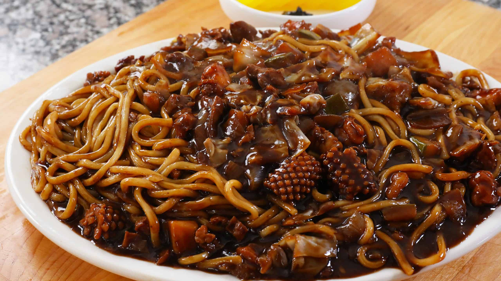

Ingredients
- Wheat noodles
- Ground pork (or beef)
- Zucchini, diced
- Potato, peeled and diced
- Onion, chopped
- Cabbage, chopped
- Carrot, julienned
- Black bean paste (Chunjang)
- Sugar
- Garlic, minced
- Ginger, minced
- Vegetable broth
- Sesame oil
- Green onions, chopped
Instructions
- Cook the wheat noodles according to the package instructions. Set aside.
- In a pan, heat sesame oil and sauté garlic, ginger, and onion until fragrant.
- Add the ground pork (or beef) and cook until browned.
- Add the zucchini, potato, carrot, and cabbage. Stir-fry for a few minutes until the vegetables start to soften.
- Mix in the black bean paste and sugar, then add the vegetable broth. Simmer for about 15 minutes until the vegetables are tender and the sauce thickens.
- Serve the noodles in bowls and pour the sauce with vegetables and meat over the noodles.
- Garnish with green onions and serve hot.